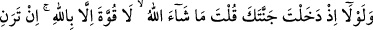

el-İrşâd’da şöyle der: Bu ifâdenin faydası, öncelikle söylenecek sözün tartışmak için
söylenmiş önemli bir söz olduğuna dikkat çekmektir.
Şimdi sen Allah’ın sıfatlarından ve kudretinden şüphe ederek “kıyâmetin kopacağını
sanmam” (el-Kehf, 18/36) demekle “Sen, seni topraktan, sonra” ikinci olarak
annenin rahminde yaratılışına en yakın madde olan “nutfeden (spermadan) yaratan,
daha sonra seni” mûtedil bir yaratılış ve boyda “bir adam” adam seviyesine ulaşmış
erkek bir insan “biçimine sokan Allah’ı inkâr mı ettin?” Aslın olan Âdem (a.s.)’ın
yaratılışı zımnında seni de topraktan var eden Allah’ı inkâr mı ettin? Çünkü Hz.
Âdem’in topraktan yaratılmış olması, bahçe sâhibinin de ondan var edilişini ifâde eder.
Hz. Âdem (a.s.) icmâlen cinsinin bütün fertlerine şâmil olan bir örnektir.
Âyetin başındaki istifham hemzesi, takrîr ve imkan içindir. Yâni, senin O’nu inkâr
etmen gerekmez. Seni ilk olarak topraktan yaratanı niçin inkâr ettin?”
38. “Fakat O Allah benim Rabbimdir ve ben Rabbime hiçbir şeyi ortak koşmam.”
“Fakat O Allah benim Rabbimdir.” Âyetin “
” nın aslı, “
” dir. “Ene”deki
hemze, harekesi “lakin”in nûn’una nakl edilerek hazf olunmuştur. Ya da -kıyasın
hilafına- harekesi “lakin”in nûn’una nakl olunmadan hazf olunmuş, iki nun birbirine
katılmıştır (idğam edilmiştir.) İbn Âmir hâriç, bütün kurrâ, vakıf hâlinde onun elifini
tesbit etmiş, okumuş, vasl hâlinde ise hazf etmişlerdir. İbn Âmir ise vasl hâlinde de
isbât etmiştir.
Sanki o bu sözü ile kardeşine şöyle demektedir: “Sen Allah’ı inkâr ediyorsun. Ben ise
mü’min ve muvahhidim.” Lâkin kelimesi nefy ve isbat konusunda birbirinden ayrı olan
iki cümle arasında vâki olmuştur.
“Ben Rabb’ime hiçbir şeyi ortak koşmam.” Burada kâfir olan kardeşin küfrünün
Allah’a ortak koşmak yoluyla olduğu bildirilmektedir.
39. “Bağına girdiğinde: Mâşâallah! Kuvvet yalnız Allah’ındır, deseydin ya! Eğer
malca ve evlâtça beni kendinden güçsüz görüyorsan (şunu bil ki):”
“Bağına girdiğinde: Mâşâallah! Kuvvet yalnız Allah’ındır, deseydin ya!” demen
gerekmez miydi? Keşke böyle deseydin!” Sen bahçene girdiğin vakit; Allah dilemiş de
olmuş deseydin. Yâni “bu iş ancak Allah’ın dilemesiyle olur!” demeli değil miydin. Bu